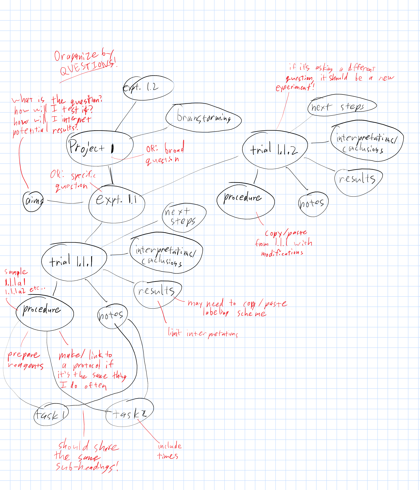

Max's lab notebook organization
Table of Contents
template/description
I use Emacs Org-Mode to write everything for my lab notebook (including this page)! Catch the wave! This organization is just for my experimental work; I still use emacs but with a different organizational structure for programmatical theory and analysis.
Project 1: project title
Project title should briefly convey the broad question of the project
Relevant literature
This is a place to take notes from scientific literature (with references lu_clathrin-mediated_2016!) for information that informs experimental design and/or might go into the manuscript for the project
Brainstorming
Put under-developed ideas for future experiments here so they don't get buried and forgotten elsewhere
Experiment 1.1: experiment title
Experiment title should briefly convey the specific question that the experiment is designed to address
Aims
A few bullet points to further expand on the experiment title:
- What do you hope to answer? How will you try to answer it?
- If there are multiple questions, ask yourself whether it makes more sense to split them into separate experiments
- Why are you asking the experimental question?
- How will you interpret potential results?
Trial 1.1.1: trial title
The trial title should state whether it is a repeat or slightly tweaked procedure for optimization (include what the tweak is if that's the case). If the trial is designed to ask a different question than other trials, it should be a new experiment instead.
procedure
- Write up a complete numbered protocol before starting anything at the bench
- Include preparing specialized reagents
- If there is a commonly used task required, write up a separate protocol for it (if one doesn't already exist), upload it to the lab protocols database, copy it into the trial procedure, and link to its location in the database
Include a descriptive table when samples will be generated, complete with unique identifiers corresponding to the project (first number), experiment (second number), trial (third number), sample type abbreviation (letter), and the specific sample of that type for the trial (last number)
Sample ID Description 1.1.1P1 project 1, experiment 1, trial 1, first PCR sample 1.1.1P2 project 1, experiment 1, trial 1, second PCR sample - Sample IDs should be written as radio target links when they're first described, so that all future times they're written out will link back to the place where they were defined: 1.1.1P1
notes
- The notes section should have the same headlines and
steps as the procedure to serve as a checklist, complete with timestamps
- if anything not exactly according to the protocol happened, make a note about it here under the appropriate step
- make sure to note when samples, like 1.1.1P1, were generated and where they were stored
results
This section will vary widely depending on the type of experiment, but always label everything!!! Do not make any interpretations here. If there are multiple samples with data, each should get their own headline in this section.
interpretaions/conclusions
What does the data say about the specific experimental question and the broad project question? How/why?
next steps
Are there any other experiments that the results suggest should be done?
Experiment 1.2: experiment title
Aims
Trial 1.2.1: trial title
procedure
notes
results
interpretaions/conclusions
next steps
Project 2: project title
Relevant literature
Brainstorming
Experiment 2.1: experiment title
Aims
Trial 2.1.1: trial title
procedure
notes
results
interpretaions/conclusions
next steps
Experiment 2.2: experiment title
Aims
Trial 2.2.1: trial title
procedure
notes
results
interpretaions/conclusions
next steps
graphical depiction
